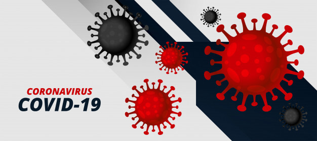

<ion-app>
  <ion-menu side="start" menuId="first" contentId="main">
    

    <ion-content>
      <div class="menu-section">
        <ion-list>
          <ion-item
            button
            lines="none"
            no-padding
            (click)="navigateLink('./tabs/tab1')"
          >
            <ion-icon name="home-outline" slot="start"></ion-icon>
            <ion-label>
              Dashboard
            </ion-label>
          </ion-item>
          <ion-item
            button
            lines="none"
            no-padding
            (click)="navigateLink('./tabs/tab2')"
          >
            <ion-icon name="medkit-outline" slot="start"></ion-icon>
            <ion-label>Safety Measures</ion-label>
          </ion-item>

          <ion-item
            button
            lines="none"
            no-padding
            (click)="openSearchList('country')"
          >
            <ion-icon name="map-outline" slot="start"></ion-icon>
            <ion-label>Global - View by Country</ion-label>
          </ion-item>
          <ion-item
            button
            lines="none"
            no-padding
            (click)="openSearchList('state')"
          >
            <ion-icon name="locate-outline" slot="start"></ion-icon>
            <ion-label>India - View by State</ion-label>
          </ion-item>
          <ion-item
            button
            lines="none"
            no-padding
            (click)="openSearchList('district')"
          >
            <ion-icon name="navigate-outline" slot="start"></ion-icon>
            <ion-label>TamilNadu - View by District</ion-label>
          </ion-item>

          <ion-item
            button
            lines="none"
            no-padding
            (click)="navigateLink('./tabs/tab3')"
          >
            <ion-icon name="information-circle-outline" slot="start"></ion-icon>
            <ion-label>App Info</ion-label>
          </ion-item>
        </ion-list>
      </div>
    </ion-content>
  </ion-menu>

  <ion-router-outlet id="main"></ion-router-outlet>
</ion-app>
